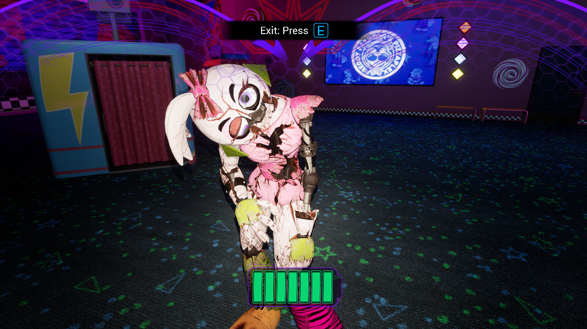

This mod for Five Nights at Freddy's Security Breach fixes Shattered Chica's Endo material to use the correct one.
In Security Breach, Shattered Chica's endo uses Glamrock Chica's body material instead of the correct endo material.
This is due to "Enable Swap" accidentally being left set to true on her CharacterHourlyMaterialController from the base Chica character Blueprint.
This required decompiling her Blueprint so that I could override it to be set to false.
